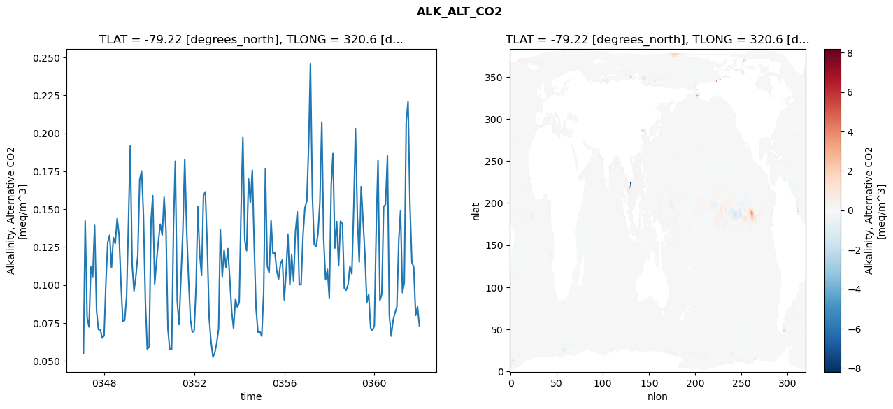
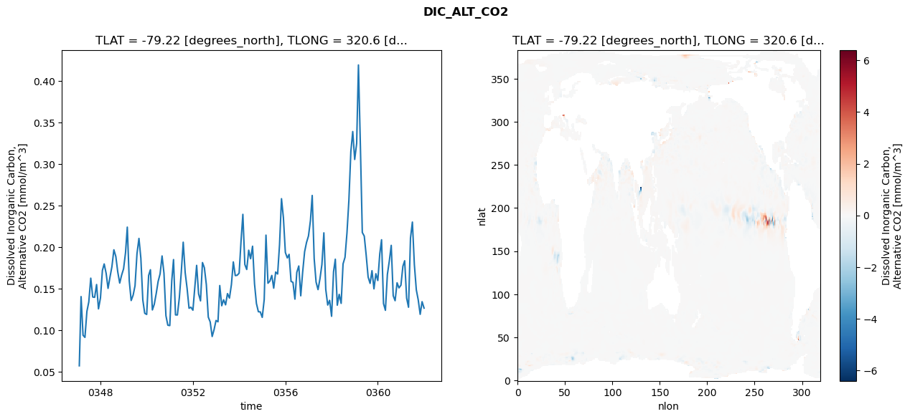
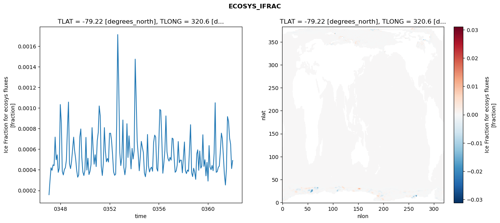
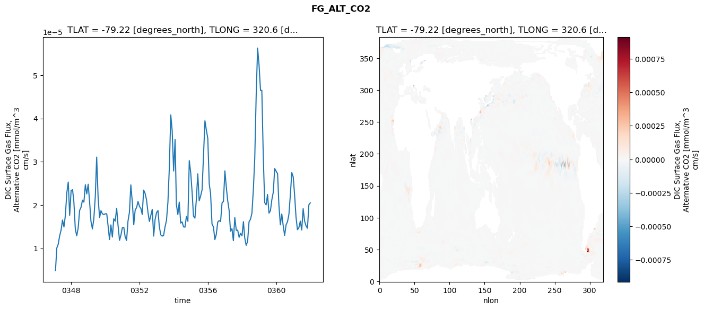

glb-dor_North_Atlantic_basin_007_1999-01-01_00028#
Simulation details#
Case: smyle.cdr-atlas-v0.glb-dor_North_Atlantic_basin_007_1999-01-01_00028.001
Basin: North_Atlantic_basin
Polygon: 7.0
Start date: 1999-01
Show code cell source Hide code cell source
import xarray as xr
import matplotlib.pyplot as plt
Show code cell source Hide code cell source
zarr_store = "/path/to/zarr/store"
# Parameters
zarr_store = "/global/cfs/projectdirs/m4746/Projects/Ocean-CDR-Atlas-v0/data/validation/smyle.cdr-atlas-v0.glb-dor_North_Atlantic_basin_007_1999-01-01_00028.001.validation.zarr"
Show code cell source Hide code cell source
%%time
ds_o = xr.open_zarr(zarr_store).compute()
ds_o
CPU times: user 610 ms, sys: 513 ms, total: 1.12 s
Wall time: 1.38 s
<xarray.Dataset> Size: 2MB
Dimensions: (nlat: 384, nlon: 320, time: 180)
Coordinates:
TLAT float64 8B -79.22
TLONG float64 8B 320.6
ULAT float64 8B -78.95
ULONG float64 8B 321.1
* time (time) object 1kB 0347-02-01 00:00:00 ... 0362-01-01 0...
z_t float32 4B 500.0
Dimensions without coordinates: nlat, nlon
Data variables:
ALK_ALT_CO2_diff (nlat, nlon) float32 492kB nan nan nan ... nan nan nan
ALK_ALT_CO2_rmse (time) float64 1kB 0.05509 0.1423 ... 0.08575 0.07288
DIC_ALT_CO2_diff (nlat, nlon) float32 492kB nan nan nan ... nan nan nan
DIC_ALT_CO2_rmse (time) float64 1kB 0.05694 0.1402 ... 0.1341 0.1264
ECOSYS_IFRAC_diff (nlat, nlon) float32 492kB nan nan nan ... nan nan nan
ECOSYS_IFRAC_rmse (time) float64 1kB 0.0001586 0.000293 ... 0.0004907
FG_ALT_CO2_diff (nlat, nlon) float32 492kB nan nan nan ... nan nan nan
FG_ALT_CO2_rmse (time) float64 1kB 4.836e-06 1.005e-05 ... 2.051e-05xarray.Dataset
- nlat: 384
- nlon: 320
- time: 180
- TLAT()float64-79.22
- long_name :
- array of t-grid latitudes
- units :
- degrees_north
array(-79.22052261)
- TLONG()float64320.6
- long_name :
- array of t-grid longitudes
- units :
- degrees_east
array(320.56250892)
- ULAT()float64-78.95
- long_name :
- array of u-grid latitudes
- units :
- degrees_north
array(-78.95289509)
- ULONG()float64321.1
- long_name :
- array of u-grid longitudes
- units :
- degrees_east
array(321.12500894)
- time(time)object0347-02-01 00:00:00 ... 0362-01-...
- bounds :
- time_bound
- long_name :
- time
array([cftime.DatetimeNoLeap(347, 2, 1, 0, 0, 0, 0, has_year_zero=True), cftime.DatetimeNoLeap(347, 3, 1, 0, 0, 0, 0, has_year_zero=True), cftime.DatetimeNoLeap(347, 4, 1, 0, 0, 0, 0, has_year_zero=True), cftime.DatetimeNoLeap(347, 5, 1, 0, 0, 0, 0, has_year_zero=True), cftime.DatetimeNoLeap(347, 6, 1, 0, 0, 0, 0, has_year_zero=True), cftime.DatetimeNoLeap(347, 7, 1, 0, 0, 0, 0, has_year_zero=True), cftime.DatetimeNoLeap(347, 8, 1, 0, 0, 0, 0, has_year_zero=True), cftime.DatetimeNoLeap(347, 9, 1, 0, 0, 0, 0, has_year_zero=True), cftime.DatetimeNoLeap(347, 10, 1, 0, 0, 0, 0, has_year_zero=True), cftime.DatetimeNoLeap(347, 11, 1, 0, 0, 0, 0, has_year_zero=True), cftime.DatetimeNoLeap(347, 12, 1, 0, 0, 0, 0, has_year_zero=True), cftime.DatetimeNoLeap(348, 1, 1, 0, 0, 0, 0, has_year_zero=True), cftime.DatetimeNoLeap(348, 2, 1, 0, 0, 0, 0, has_year_zero=True), cftime.DatetimeNoLeap(348, 3, 1, 0, 0, 0, 0, has_year_zero=True), cftime.DatetimeNoLeap(348, 4, 1, 0, 0, 0, 0, has_year_zero=True), cftime.DatetimeNoLeap(348, 5, 1, 0, 0, 0, 0, has_year_zero=True), cftime.DatetimeNoLeap(348, 6, 1, 0, 0, 0, 0, has_year_zero=True), cftime.DatetimeNoLeap(348, 7, 1, 0, 0, 0, 0, has_year_zero=True), cftime.DatetimeNoLeap(348, 8, 1, 0, 0, 0, 0, has_year_zero=True), cftime.DatetimeNoLeap(348, 9, 1, 0, 0, 0, 0, has_year_zero=True), cftime.DatetimeNoLeap(348, 10, 1, 0, 0, 0, 0, has_year_zero=True), cftime.DatetimeNoLeap(348, 11, 1, 0, 0, 0, 0, has_year_zero=True), cftime.DatetimeNoLeap(348, 12, 1, 0, 0, 0, 0, has_year_zero=True), cftime.DatetimeNoLeap(349, 1, 1, 0, 0, 0, 0, has_year_zero=True), cftime.DatetimeNoLeap(349, 2, 1, 0, 0, 0, 0, has_year_zero=True), cftime.DatetimeNoLeap(349, 3, 1, 0, 0, 0, 0, has_year_zero=True), cftime.DatetimeNoLeap(349, 4, 1, 0, 0, 0, 0, has_year_zero=True), cftime.DatetimeNoLeap(349, 5, 1, 0, 0, 0, 0, has_year_zero=True), cftime.DatetimeNoLeap(349, 6, 1, 0, 0, 0, 0, has_year_zero=True), cftime.DatetimeNoLeap(349, 7, 1, 0, 0, 0, 0, has_year_zero=True), cftime.DatetimeNoLeap(349, 8, 1, 0, 0, 0, 0, has_year_zero=True), cftime.DatetimeNoLeap(349, 9, 1, 0, 0, 0, 0, has_year_zero=True), cftime.DatetimeNoLeap(349, 10, 1, 0, 0, 0, 0, has_year_zero=True), cftime.DatetimeNoLeap(349, 11, 1, 0, 0, 0, 0, has_year_zero=True), cftime.DatetimeNoLeap(349, 12, 1, 0, 0, 0, 0, has_year_zero=True), cftime.DatetimeNoLeap(350, 1, 1, 0, 0, 0, 0, has_year_zero=True), cftime.DatetimeNoLeap(350, 2, 1, 0, 0, 0, 0, has_year_zero=True), cftime.DatetimeNoLeap(350, 3, 1, 0, 0, 0, 0, has_year_zero=True), cftime.DatetimeNoLeap(350, 4, 1, 0, 0, 0, 0, has_year_zero=True), cftime.DatetimeNoLeap(350, 5, 1, 0, 0, 0, 0, has_year_zero=True), cftime.DatetimeNoLeap(350, 6, 1, 0, 0, 0, 0, has_year_zero=True), cftime.DatetimeNoLeap(350, 7, 1, 0, 0, 0, 0, has_year_zero=True), cftime.DatetimeNoLeap(350, 8, 1, 0, 0, 0, 0, has_year_zero=True), cftime.DatetimeNoLeap(350, 9, 1, 0, 0, 0, 0, has_year_zero=True), cftime.DatetimeNoLeap(350, 10, 1, 0, 0, 0, 0, has_year_zero=True), cftime.DatetimeNoLeap(350, 11, 1, 0, 0, 0, 0, has_year_zero=True), cftime.DatetimeNoLeap(350, 12, 1, 0, 0, 0, 0, has_year_zero=True), cftime.DatetimeNoLeap(351, 1, 1, 0, 0, 0, 0, has_year_zero=True), cftime.DatetimeNoLeap(351, 2, 1, 0, 0, 0, 0, has_year_zero=True), cftime.DatetimeNoLeap(351, 3, 1, 0, 0, 0, 0, has_year_zero=True), cftime.DatetimeNoLeap(351, 4, 1, 0, 0, 0, 0, has_year_zero=True), cftime.DatetimeNoLeap(351, 5, 1, 0, 0, 0, 0, has_year_zero=True), cftime.DatetimeNoLeap(351, 6, 1, 0, 0, 0, 0, has_year_zero=True), cftime.DatetimeNoLeap(351, 7, 1, 0, 0, 0, 0, has_year_zero=True), cftime.DatetimeNoLeap(351, 8, 1, 0, 0, 0, 0, has_year_zero=True), cftime.DatetimeNoLeap(351, 9, 1, 0, 0, 0, 0, has_year_zero=True), cftime.DatetimeNoLeap(351, 10, 1, 0, 0, 0, 0, has_year_zero=True), cftime.DatetimeNoLeap(351, 11, 1, 0, 0, 0, 0, has_year_zero=True), cftime.DatetimeNoLeap(351, 12, 1, 0, 0, 0, 0, has_year_zero=True), cftime.DatetimeNoLeap(352, 1, 1, 0, 0, 0, 0, has_year_zero=True), cftime.DatetimeNoLeap(352, 2, 1, 0, 0, 0, 0, has_year_zero=True), cftime.DatetimeNoLeap(352, 3, 1, 0, 0, 0, 0, has_year_zero=True), cftime.DatetimeNoLeap(352, 4, 1, 0, 0, 0, 0, has_year_zero=True), cftime.DatetimeNoLeap(352, 5, 1, 0, 0, 0, 0, has_year_zero=True), cftime.DatetimeNoLeap(352, 6, 1, 0, 0, 0, 0, has_year_zero=True), cftime.DatetimeNoLeap(352, 7, 1, 0, 0, 0, 0, has_year_zero=True), cftime.DatetimeNoLeap(352, 8, 1, 0, 0, 0, 0, has_year_zero=True), cftime.DatetimeNoLeap(352, 9, 1, 0, 0, 0, 0, has_year_zero=True), cftime.DatetimeNoLeap(352, 10, 1, 0, 0, 0, 0, has_year_zero=True), cftime.DatetimeNoLeap(352, 11, 1, 0, 0, 0, 0, has_year_zero=True), cftime.DatetimeNoLeap(352, 12, 1, 0, 0, 0, 0, has_year_zero=True), cftime.DatetimeNoLeap(353, 1, 1, 0, 0, 0, 0, has_year_zero=True), cftime.DatetimeNoLeap(353, 2, 1, 0, 0, 0, 0, has_year_zero=True), cftime.DatetimeNoLeap(353, 3, 1, 0, 0, 0, 0, has_year_zero=True), cftime.DatetimeNoLeap(353, 4, 1, 0, 0, 0, 0, has_year_zero=True), cftime.DatetimeNoLeap(353, 5, 1, 0, 0, 0, 0, has_year_zero=True), cftime.DatetimeNoLeap(353, 6, 1, 0, 0, 0, 0, has_year_zero=True), cftime.DatetimeNoLeap(353, 7, 1, 0, 0, 0, 0, has_year_zero=True), cftime.DatetimeNoLeap(353, 8, 1, 0, 0, 0, 0, has_year_zero=True), cftime.DatetimeNoLeap(353, 9, 1, 0, 0, 0, 0, has_year_zero=True), cftime.DatetimeNoLeap(353, 10, 1, 0, 0, 0, 0, has_year_zero=True), cftime.DatetimeNoLeap(353, 11, 1, 0, 0, 0, 0, has_year_zero=True), cftime.DatetimeNoLeap(353, 12, 1, 0, 0, 0, 0, has_year_zero=True), cftime.DatetimeNoLeap(354, 1, 1, 0, 0, 0, 0, has_year_zero=True), cftime.DatetimeNoLeap(354, 2, 1, 0, 0, 0, 0, has_year_zero=True), cftime.DatetimeNoLeap(354, 3, 1, 0, 0, 0, 0, has_year_zero=True), cftime.DatetimeNoLeap(354, 4, 1, 0, 0, 0, 0, has_year_zero=True), cftime.DatetimeNoLeap(354, 5, 1, 0, 0, 0, 0, has_year_zero=True), cftime.DatetimeNoLeap(354, 6, 1, 0, 0, 0, 0, has_year_zero=True), cftime.DatetimeNoLeap(354, 7, 1, 0, 0, 0, 0, has_year_zero=True), cftime.DatetimeNoLeap(354, 8, 1, 0, 0, 0, 0, has_year_zero=True), cftime.DatetimeNoLeap(354, 9, 1, 0, 0, 0, 0, has_year_zero=True), cftime.DatetimeNoLeap(354, 10, 1, 0, 0, 0, 0, has_year_zero=True), cftime.DatetimeNoLeap(354, 11, 1, 0, 0, 0, 0, has_year_zero=True), cftime.DatetimeNoLeap(354, 12, 1, 0, 0, 0, 0, has_year_zero=True), cftime.DatetimeNoLeap(355, 1, 1, 0, 0, 0, 0, has_year_zero=True), cftime.DatetimeNoLeap(355, 2, 1, 0, 0, 0, 0, has_year_zero=True), cftime.DatetimeNoLeap(355, 3, 1, 0, 0, 0, 0, has_year_zero=True), cftime.DatetimeNoLeap(355, 4, 1, 0, 0, 0, 0, has_year_zero=True), cftime.DatetimeNoLeap(355, 5, 1, 0, 0, 0, 0, has_year_zero=True), cftime.DatetimeNoLeap(355, 6, 1, 0, 0, 0, 0, has_year_zero=True), cftime.DatetimeNoLeap(355, 7, 1, 0, 0, 0, 0, has_year_zero=True), cftime.DatetimeNoLeap(355, 8, 1, 0, 0, 0, 0, has_year_zero=True), cftime.DatetimeNoLeap(355, 9, 1, 0, 0, 0, 0, has_year_zero=True), cftime.DatetimeNoLeap(355, 10, 1, 0, 0, 0, 0, has_year_zero=True), cftime.DatetimeNoLeap(355, 11, 1, 0, 0, 0, 0, has_year_zero=True), cftime.DatetimeNoLeap(355, 12, 1, 0, 0, 0, 0, has_year_zero=True), cftime.DatetimeNoLeap(356, 1, 1, 0, 0, 0, 0, has_year_zero=True), cftime.DatetimeNoLeap(356, 2, 1, 0, 0, 0, 0, has_year_zero=True), cftime.DatetimeNoLeap(356, 3, 1, 0, 0, 0, 0, has_year_zero=True), cftime.DatetimeNoLeap(356, 4, 1, 0, 0, 0, 0, has_year_zero=True), cftime.DatetimeNoLeap(356, 5, 1, 0, 0, 0, 0, has_year_zero=True), cftime.DatetimeNoLeap(356, 6, 1, 0, 0, 0, 0, has_year_zero=True), cftime.DatetimeNoLeap(356, 7, 1, 0, 0, 0, 0, has_year_zero=True), cftime.DatetimeNoLeap(356, 8, 1, 0, 0, 0, 0, has_year_zero=True), cftime.DatetimeNoLeap(356, 9, 1, 0, 0, 0, 0, has_year_zero=True), cftime.DatetimeNoLeap(356, 10, 1, 0, 0, 0, 0, has_year_zero=True), cftime.DatetimeNoLeap(356, 11, 1, 0, 0, 0, 0, has_year_zero=True), cftime.DatetimeNoLeap(356, 12, 1, 0, 0, 0, 0, has_year_zero=True), cftime.DatetimeNoLeap(357, 1, 1, 0, 0, 0, 0, has_year_zero=True), cftime.DatetimeNoLeap(357, 2, 1, 0, 0, 0, 0, has_year_zero=True), cftime.DatetimeNoLeap(357, 3, 1, 0, 0, 0, 0, has_year_zero=True), cftime.DatetimeNoLeap(357, 4, 1, 0, 0, 0, 0, has_year_zero=True), cftime.DatetimeNoLeap(357, 5, 1, 0, 0, 0, 0, has_year_zero=True), cftime.DatetimeNoLeap(357, 6, 1, 0, 0, 0, 0, has_year_zero=True), cftime.DatetimeNoLeap(357, 7, 1, 0, 0, 0, 0, has_year_zero=True), cftime.DatetimeNoLeap(357, 8, 1, 0, 0, 0, 0, has_year_zero=True), cftime.DatetimeNoLeap(357, 9, 1, 0, 0, 0, 0, has_year_zero=True), cftime.DatetimeNoLeap(357, 10, 1, 0, 0, 0, 0, has_year_zero=True), cftime.DatetimeNoLeap(357, 11, 1, 0, 0, 0, 0, has_year_zero=True), cftime.DatetimeNoLeap(357, 12, 1, 0, 0, 0, 0, has_year_zero=True), cftime.DatetimeNoLeap(358, 1, 1, 0, 0, 0, 0, has_year_zero=True), cftime.DatetimeNoLeap(358, 2, 1, 0, 0, 0, 0, has_year_zero=True), cftime.DatetimeNoLeap(358, 3, 1, 0, 0, 0, 0, has_year_zero=True), cftime.DatetimeNoLeap(358, 4, 1, 0, 0, 0, 0, has_year_zero=True), cftime.DatetimeNoLeap(358, 5, 1, 0, 0, 0, 0, has_year_zero=True), cftime.DatetimeNoLeap(358, 6, 1, 0, 0, 0, 0, has_year_zero=True), cftime.DatetimeNoLeap(358, 7, 1, 0, 0, 0, 0, has_year_zero=True), cftime.DatetimeNoLeap(358, 8, 1, 0, 0, 0, 0, has_year_zero=True), cftime.DatetimeNoLeap(358, 9, 1, 0, 0, 0, 0, has_year_zero=True), cftime.DatetimeNoLeap(358, 10, 1, 0, 0, 0, 0, has_year_zero=True), cftime.DatetimeNoLeap(358, 11, 1, 0, 0, 0, 0, has_year_zero=True), cftime.DatetimeNoLeap(358, 12, 1, 0, 0, 0, 0, has_year_zero=True), cftime.DatetimeNoLeap(359, 1, 1, 0, 0, 0, 0, has_year_zero=True), cftime.DatetimeNoLeap(359, 2, 1, 0, 0, 0, 0, has_year_zero=True), cftime.DatetimeNoLeap(359, 3, 1, 0, 0, 0, 0, has_year_zero=True), cftime.DatetimeNoLeap(359, 4, 1, 0, 0, 0, 0, has_year_zero=True), cftime.DatetimeNoLeap(359, 5, 1, 0, 0, 0, 0, has_year_zero=True), cftime.DatetimeNoLeap(359, 6, 1, 0, 0, 0, 0, has_year_zero=True), cftime.DatetimeNoLeap(359, 7, 1, 0, 0, 0, 0, has_year_zero=True), cftime.DatetimeNoLeap(359, 8, 1, 0, 0, 0, 0, has_year_zero=True), cftime.DatetimeNoLeap(359, 9, 1, 0, 0, 0, 0, has_year_zero=True), cftime.DatetimeNoLeap(359, 10, 1, 0, 0, 0, 0, has_year_zero=True), cftime.DatetimeNoLeap(359, 11, 1, 0, 0, 0, 0, has_year_zero=True), cftime.DatetimeNoLeap(359, 12, 1, 0, 0, 0, 0, has_year_zero=True), cftime.DatetimeNoLeap(360, 1, 1, 0, 0, 0, 0, has_year_zero=True), cftime.DatetimeNoLeap(360, 2, 1, 0, 0, 0, 0, has_year_zero=True), cftime.DatetimeNoLeap(360, 3, 1, 0, 0, 0, 0, has_year_zero=True), cftime.DatetimeNoLeap(360, 4, 1, 0, 0, 0, 0, has_year_zero=True), cftime.DatetimeNoLeap(360, 5, 1, 0, 0, 0, 0, has_year_zero=True), cftime.DatetimeNoLeap(360, 6, 1, 0, 0, 0, 0, has_year_zero=True), cftime.DatetimeNoLeap(360, 7, 1, 0, 0, 0, 0, has_year_zero=True), cftime.DatetimeNoLeap(360, 8, 1, 0, 0, 0, 0, has_year_zero=True), cftime.DatetimeNoLeap(360, 9, 1, 0, 0, 0, 0, has_year_zero=True), cftime.DatetimeNoLeap(360, 10, 1, 0, 0, 0, 0, has_year_zero=True), cftime.DatetimeNoLeap(360, 11, 1, 0, 0, 0, 0, has_year_zero=True), cftime.DatetimeNoLeap(360, 12, 1, 0, 0, 0, 0, has_year_zero=True), cftime.DatetimeNoLeap(361, 1, 1, 0, 0, 0, 0, has_year_zero=True), cftime.DatetimeNoLeap(361, 2, 1, 0, 0, 0, 0, has_year_zero=True), cftime.DatetimeNoLeap(361, 3, 1, 0, 0, 0, 0, has_year_zero=True), cftime.DatetimeNoLeap(361, 4, 1, 0, 0, 0, 0, has_year_zero=True), cftime.DatetimeNoLeap(361, 5, 1, 0, 0, 0, 0, has_year_zero=True), cftime.DatetimeNoLeap(361, 6, 1, 0, 0, 0, 0, has_year_zero=True), cftime.DatetimeNoLeap(361, 7, 1, 0, 0, 0, 0, has_year_zero=True), cftime.DatetimeNoLeap(361, 8, 1, 0, 0, 0, 0, has_year_zero=True), cftime.DatetimeNoLeap(361, 9, 1, 0, 0, 0, 0, has_year_zero=True), cftime.DatetimeNoLeap(361, 10, 1, 0, 0, 0, 0, has_year_zero=True), cftime.DatetimeNoLeap(361, 11, 1, 0, 0, 0, 0, has_year_zero=True), cftime.DatetimeNoLeap(361, 12, 1, 0, 0, 0, 0, has_year_zero=True), cftime.DatetimeNoLeap(362, 1, 1, 0, 0, 0, 0, has_year_zero=True)], dtype=object) - z_t()float32500.0
- long_name :
- depth from surface to midpoint of layer
- positive :
- down
- units :
- centimeters
- valid_max :
- 537500.0
- valid_min :
- 500.0
array(500., dtype=float32)
- ALK_ALT_CO2_diff(nlat, nlon)float32nan nan nan nan ... nan nan nan nan
- cell_methods :
- time: mean
- grid_loc :
- 3111
- long_name :
- Alkalinity, Alternative CO2
- units :
- meq/m^3
array([[ nan, nan, nan, ..., nan, nan, nan], [ nan, nan, nan, ..., nan, nan, nan], [ 0.08300781, 0.01513672, -0.02514648, ..., nan, nan, nan], ..., [ nan, nan, nan, ..., nan, nan, nan], [ nan, nan, nan, ..., nan, nan, nan], [ nan, nan, nan, ..., nan, nan, nan]], dtype=float32) - ALK_ALT_CO2_rmse(time)float640.05509 0.1423 ... 0.08575 0.07288
- cell_methods :
- time: mean
- grid_loc :
- 3111
- long_name :
- Alkalinity, Alternative CO2
- units :
- meq/m^3
array([0.05508627, 0.14227871, 0.07873696, 0.07234225, 0.11183559, 0.10539904, 0.13933487, 0.08316027, 0.07057214, 0.07049426, 0.0650083 , 0.06648563, 0.10310725, 0.12814934, 0.13283845, 0.11128843, 0.13124246, 0.12727928, 0.14383305, 0.13287955, 0.10168811, 0.07576086, 0.07670788, 0.09256993, 0.14302505, 0.19167211, 0.11317786, 0.09606325, 0.10602644, 0.1195417 , 0.16939254, 0.1751561 , 0.1464807 , 0.08925233, 0.05783293, 0.05899012, 0.14234682, 0.15889726, 0.10063606, 0.11570565, 0.12914159, 0.14011655, 0.13294208, 0.15788349, 0.1363825 , 0.07073195, 0.05748651, 0.05753095, 0.14056482, 0.1816259 , 0.08936735, 0.07390785, 0.1054066 , 0.13496777, 0.18269785, 0.13679815, 0.10497056, 0.0774268 , 0.06890438, 0.06955378, 0.10000839, 0.15166005, 0.12019575, 0.10620622, 0.15914546, 0.161377 , 0.12597492, 0.07813593, 0.06259247, 0.05244277, 0.0553803 , 0.06157658, 0.07122965, 0.13676734, 0.10544209, 0.12301962, 0.11138717, 0.12390086, 0.10420104, 0.08264509, 0.07144055, 0.09077117, 0.08547069, 0.08833658, 0.15194763, 0.19729885, 0.12942618, 0.1225465 , 0.16996857, 0.15413714, 0.1756664 , 0.12522164, 0.08419139, 0.06872053, 0.06943781, 0.06616771, 0.09503256, 0.17674512, 0.11244486, 0.10798792, 0.14251438, 0.12068654, 0.12157689, 0.10940717, 0.10385518, 0.11398555, 0.11653999, 0.09012356, 0.10914468, 0.13358062, 0.09999088, 0.11988299, 0.10262078, 0.13522601, 0.1482044 , 0.10001397, 0.10054947, 0.13277695, 0.1509007 , 0.15509825, 0.19311458, 0.24603771, 0.15941221, 0.12669581, 0.12525093, 0.13355109, 0.15459332, 0.20750751, 0.13054292, 0.10336522, 0.11027043, 0.09134215, 0.16560506, 0.18666896, 0.1242522 , 0.14184082, 0.112546 , 0.1420956 , 0.14030705, 0.09774365, 0.09650111, 0.10022758, 0.11231296, 0.10726221, 0.15157965, 0.20309985, 0.14500884, 0.11506206, 0.16485229, 0.14324303, 0.12033168, 0.08845979, 0.09374066, 0.07176853, 0.06984508, 0.07331619, 0.138963 , 0.18201253, 0.08976169, 0.09377602, 0.15164844, 0.15319908, 0.18512677, 0.07980452, 0.06631142, 0.07683339, 0.08153911, 0.08561296, 0.12990687, 0.1490453 , 0.09491004, 0.10155035, 0.20706152, 0.22104111, 0.15233804, 0.11484095, 0.11177273, 0.07994108, 0.08574779, 0.0728786 ]) - DIC_ALT_CO2_diff(nlat, nlon)float32nan nan nan nan ... nan nan nan nan
- cell_methods :
- time: mean
- grid_loc :
- 3111
- long_name :
- Dissolved Inorganic Carbon, Alternative CO2
- units :
- mmol/m^3
array([[ nan, nan, nan, ..., nan, nan, nan], [ nan, nan, nan, ..., nan, nan, nan], [ 0.08886719, 0.01611328, -0.01831055, ..., nan, nan, nan], ..., [ nan, nan, nan, ..., nan, nan, nan], [ nan, nan, nan, ..., nan, nan, nan], [ nan, nan, nan, ..., nan, nan, nan]], dtype=float32) - DIC_ALT_CO2_rmse(time)float640.05694 0.1402 ... 0.1341 0.1264
- cell_methods :
- time: mean
- grid_loc :
- 3111
- long_name :
- Dissolved Inorganic Carbon, Alternative CO2
- units :
- mmol/m^3
array([0.05693638, 0.14022431, 0.09371972, 0.09114424, 0.12239299, 0.13385075, 0.16241091, 0.13973662, 0.1393438 , 0.15473962, 0.12549986, 0.1385226 , 0.17184709, 0.17953193, 0.16815675, 0.15014466, 0.16388337, 0.17623241, 0.19657248, 0.18847712, 0.17009787, 0.1564911 , 0.16593423, 0.17362785, 0.193104 , 0.22384516, 0.15916114, 0.13549742, 0.14192905, 0.15323485, 0.1918857 , 0.21025783, 0.18649643, 0.1361525 , 0.12014975, 0.11875144, 0.1657138 , 0.17257302, 0.12415724, 0.13100911, 0.14414167, 0.15853952, 0.16766201, 0.18913874, 0.16839727, 0.11727599, 0.10580816, 0.10534947, 0.1593168 , 0.18477369, 0.11820734, 0.11812941, 0.13909436, 0.16919949, 0.20569561, 0.1690682 , 0.15028741, 0.1262365 , 0.12742554, 0.12385309, 0.152176 , 0.1778085 , 0.14350156, 0.1350888 , 0.18121037, 0.17502574, 0.15473184, 0.11551963, 0.10973455, 0.09218697, 0.10040825, 0.1114681 , 0.10992438, 0.15354314, 0.12922817, 0.13637112, 0.13032393, 0.1438359 , 0.1383968 , 0.15468354, 0.18196745, 0.16550395, 0.16592719, 0.16847412, 0.20814929, 0.23923149, 0.17892357, 0.1728462 , 0.19606228, 0.18580593, 0.20085999, 0.15565046, 0.13197164, 0.12202847, 0.12180318, 0.11522 , 0.13671329, 0.21420914, 0.15631584, 0.15884201, 0.16572611, 0.15042135, 0.16983299, 0.16741594, 0.20267929, 0.2580556 , 0.23539033, 0.19336533, 0.18675326, 0.19109097, 0.15852736, 0.15736892, 0.13720586, 0.16955564, 0.17708818, 0.14120428, 0.16956394, 0.19420422, 0.20532789, 0.21321633, 0.23174221, 0.26195956, 0.18607901, 0.15771908, 0.14864025, 0.16155043, 0.17875186, 0.21695312, 0.14892208, 0.13004446, 0.13574458, 0.11654969, 0.17018328, 0.18521849, 0.12990325, 0.1429398 , 0.13209091, 0.179604 , 0.18749854, 0.21701089, 0.25593206, 0.31463637, 0.33888402, 0.30529982, 0.32466289, 0.41901733, 0.32069271, 0.21741737, 0.21302807, 0.19029289, 0.16380759, 0.15613353, 0.17141386, 0.14957782, 0.16778834, 0.15956086, 0.19166762, 0.20863086, 0.13181628, 0.12374243, 0.16690406, 0.18279062, 0.20190291, 0.14132278, 0.13528723, 0.15688395, 0.15071411, 0.15393436, 0.1767566 , 0.18340051, 0.13839323, 0.12743052, 0.21086417, 0.22993243, 0.17887805, 0.14833291, 0.13632307, 0.11892747, 0.13410719, 0.12637785]) - ECOSYS_IFRAC_diff(nlat, nlon)float32nan nan nan nan ... nan nan nan nan
- cell_methods :
- time: mean
- grid_loc :
- 2110
- long_name :
- Ice Fraction for ecosys fluxes
- units :
- fraction
array([[ nan, nan, nan, ..., nan, nan, nan], [ nan, nan, nan, ..., nan, nan, nan], [-0.00030398, -0.00022542, -0.00114965, ..., nan, nan, nan], ..., [ nan, nan, nan, ..., nan, nan, nan], [ nan, nan, nan, ..., nan, nan, nan], [ nan, nan, nan, ..., nan, nan, nan]], dtype=float32) - ECOSYS_IFRAC_rmse(time)float640.0001586 0.000293 ... 0.0004907
- cell_methods :
- time: mean
- grid_loc :
- 2110
- long_name :
- Ice Fraction for ecosys fluxes
- units :
- fraction
array([0.00015862, 0.00029302, 0.00041992, 0.00039504, 0.00044863, 0.00044109, 0.00071778, 0.00049737, 0.00054573, 0.00037546, 0.00041343, 0.00103384, 0.00085379, 0.00038456, 0.00035025, 0.00040175, 0.00042065, 0.00049713, 0.00080274, 0.00105774, 0.0004574 , 0.00041163, 0.00048136, 0.00059726, 0.00071716, 0.00058776, 0.00050885, 0.00039842, 0.00032837, 0.00035076, 0.00071499, 0.00079683, 0.00052041, 0.00037914, 0.00034434, 0.00039616, 0.00071503, 0.00039741, 0.00051228, 0.00035395, 0.00038548, 0.00045122, 0.00080958, 0.00060887, 0.00045433, 0.00054662, 0.00043132, 0.00067978, 0.00076405, 0.00101998, 0.00092182, 0.00043433, 0.00034495, 0.00046392, 0.00080974, 0.00058 , 0.00047804, 0.00051113, 0.00047556, 0.00075473, 0.00075473, 0.00068692, 0.00054609, 0.0003806 , 0.00034675, 0.00035832, 0.0008409 , 0.00171271, 0.00121571, 0.0005668 , 0.00044149, 0.00051797, 0.00088363, 0.00042435, 0.00035189, 0.00042793, 0.00084764, 0.00051973, 0.00073014, 0.00056685, 0.00040912, 0.00060843, 0.00050458, 0.00058365, 0.00147437, 0.00109859, 0.00067521, 0.00054813, 0.00039092, 0.00052262, 0.00067625, 0.00061827, 0.00056792, 0.00036929, 0.00033267, 0.00041416, 0.00074317, 0.00043896, 0.00037915, 0.00041302, 0.00042541, 0.00038632, 0.00066526, 0.00073682, 0.00071806, 0.00041403, 0.00038723, 0.00064198, 0.00098565, 0.00097606, 0.00069177, 0.00036661, 0.0004673 , 0.00058833, 0.0009233 , 0.00057438, 0.00050907, 0.00048437, 0.0005206 , 0.00049402, 0.00070778, 0.00070013, 0.00051699, 0.00037603, 0.00038948, 0.00044511, 0.0006747 , 0.00046918, 0.00049461, 0.00049338, 0.00037137, 0.00051909, 0.0006703 , 0.00039187, 0.00036333, 0.00039823, 0.00038476, 0.00061016, 0.00083812, 0.00037408, 0.00033438, 0.00041574, 0.00037636, 0.00030766, 0.00055371, 0.00059415, 0.00039533, 0.0005832 , 0.00041586, 0.00043746, 0.00074047, 0.00043328, 0.00049811, 0.00034149, 0.00047254, 0.00029056, 0.0006353 , 0.00042767, 0.00040069, 0.00044264, 0.0003912 , 0.00056419, 0.00105098, 0.00037572, 0.00038262, 0.00042397, 0.00043582, 0.0005789 , 0.00075597, 0.00070273, 0.00053296, 0.00035535, 0.00025261, 0.00041214, 0.00091643, 0.00087227, 0.00071004, 0.00065035, 0.00041211, 0.00049071]) - FG_ALT_CO2_diff(nlat, nlon)float32nan nan nan nan ... nan nan nan nan
- cell_methods :
- time: mean
- grid_loc :
- 2110
- long_name :
- DIC Surface Gas Flux, Alternative CO2
- units :
- mmol/m^3 cm/s
array([[ nan, nan, nan, ..., nan, nan, nan], [ nan, nan, nan, ..., nan, nan, nan], [1.6808144e-07, 1.8859600e-07, 6.6978828e-07, ..., nan, nan, nan], ..., [ nan, nan, nan, ..., nan, nan, nan], [ nan, nan, nan, ..., nan, nan, nan], [ nan, nan, nan, ..., nan, nan, nan]], dtype=float32) - FG_ALT_CO2_rmse(time)float644.836e-06 1.005e-05 ... 2.051e-05
- cell_methods :
- time: mean
- grid_loc :
- 2110
- long_name :
- DIC Surface Gas Flux, Alternative CO2
- units :
- mmol/m^3 cm/s
array([4.83567898e-06, 1.00519097e-05, 1.09641960e-05, 1.28791646e-05, 1.42161913e-05, 1.65370582e-05, 1.49223211e-05, 1.76928551e-05, 2.28101789e-05, 2.53200667e-05, 1.76217269e-05, 2.33389631e-05, 2.35484011e-05, 2.07082433e-05, 1.44138327e-05, 1.28734177e-05, 1.47073158e-05, 1.87223461e-05, 1.95040809e-05, 2.11250200e-05, 2.06641241e-05, 2.46962026e-05, 2.25754465e-05, 2.48150796e-05, 2.05734378e-05, 1.62366893e-05, 1.44884809e-05, 1.67722365e-05, 2.18736729e-05, 3.10741670e-05, 2.16528266e-05, 1.70819013e-05, 1.86954426e-05, 1.79659613e-05, 1.77846385e-05, 1.79710985e-05, 1.79752728e-05, 1.52652406e-05, 1.20157401e-05, 1.54091120e-05, 1.25910091e-05, 1.68239983e-05, 1.62656436e-05, 1.92613635e-05, 1.52420513e-05, 1.18371583e-05, 1.30558382e-05, 1.47656253e-05, 1.48182086e-05, 1.26728697e-05, 1.18199752e-05, 1.62894653e-05, 1.83359044e-05, 2.46529061e-05, 2.07109441e-05, 1.54340857e-05, 1.88286527e-05, 1.94093459e-05, 2.08113854e-05, 1.96973249e-05, 1.91730283e-05, 1.78472419e-05, 2.34553231e-05, 2.27107787e-05, 2.12011884e-05, 1.83796781e-05, 1.61929784e-05, 1.75867853e-05, 1.89859579e-05, 1.28212997e-05, 1.66707772e-05, 1.82602419e-05, 1.87165661e-05, 1.50467411e-05, 1.31082139e-05, 1.28139550e-05, 1.29767721e-05, 1.49408176e-05, 1.64268643e-05, 2.06512304e-05, ... 2.72052407e-05, 2.09762518e-05, 2.20964510e-05, 2.35550036e-05, 3.15449475e-05, 3.94691740e-05, 3.73142615e-05, 3.53980606e-05, 2.48385617e-05, 2.27106991e-05, 1.56138025e-05, 1.49487897e-05, 1.20133935e-05, 1.32029866e-05, 1.60576074e-05, 1.64090919e-05, 1.61814949e-05, 2.04900597e-05, 2.08337854e-05, 2.79009264e-05, 2.40808568e-05, 2.10907835e-05, 1.87749311e-05, 1.39549793e-05, 1.45401696e-05, 1.17596605e-05, 1.70974206e-05, 1.41482785e-05, 1.41974257e-05, 1.25379062e-05, 1.34472292e-05, 1.28743109e-05, 1.61576838e-05, 1.23971390e-05, 1.06832186e-05, 1.15868491e-05, 1.61501010e-05, 1.66899677e-05, 1.80785502e-05, 2.35559998e-05, 3.08240620e-05, 4.55979485e-05, 5.62769623e-05, 5.23113007e-05, 4.64857398e-05, 4.65258709e-05, 3.12152913e-05, 2.05821958e-05, 2.00353019e-05, 2.24414136e-05, 1.81269038e-05, 1.86916873e-05, 2.12304117e-05, 2.29935669e-05, 2.84311664e-05, 2.78091662e-05, 2.72419355e-05, 1.99515298e-05, 1.54247110e-05, 1.79314993e-05, 1.51962971e-05, 1.29772756e-05, 1.54088168e-05, 1.61641871e-05, 1.78714241e-05, 2.24228143e-05, 2.74993424e-05, 2.64798698e-05, 2.20784501e-05, 1.72701966e-05, 1.43034474e-05, 1.47457976e-05, 1.62862200e-05, 1.42357243e-05, 1.91581903e-05, 1.62856997e-05, 1.51970104e-05, 1.46276841e-05, 2.00576699e-05, 2.05091715e-05])
- timePandasIndex
PandasIndex(CFTimeIndex([0347-02-01 00:00:00, 0347-03-01 00:00:00, 0347-04-01 00:00:00, 0347-05-01 00:00:00, 0347-06-01 00:00:00, 0347-07-01 00:00:00, 0347-08-01 00:00:00, 0347-09-01 00:00:00, 0347-10-01 00:00:00, 0347-11-01 00:00:00, ... 0361-04-01 00:00:00, 0361-05-01 00:00:00, 0361-06-01 00:00:00, 0361-07-01 00:00:00, 0361-08-01 00:00:00, 0361-09-01 00:00:00, 0361-10-01 00:00:00, 0361-11-01 00:00:00, 0361-12-01 00:00:00, 0362-01-01 00:00:00], dtype='object', length=180, calendar='noleap', freq='MS'))
Show code cell source Hide code cell source
variables = [v[:-5] for v in ds_o.variables if "_rmse" in v]
Show code cell source Hide code cell source
plt.rcParams.update({'figure.max_open_warning': 0})
for v in variables:
fig, axs = plt.subplots(1, 2, figsize=(15, 6))
ds_o[f"{v}_rmse"].plot(ax=axs[0])
ds_o[f"{v}_diff"].plot(ax=axs[1])
plt.suptitle(v, fontweight="bold")



